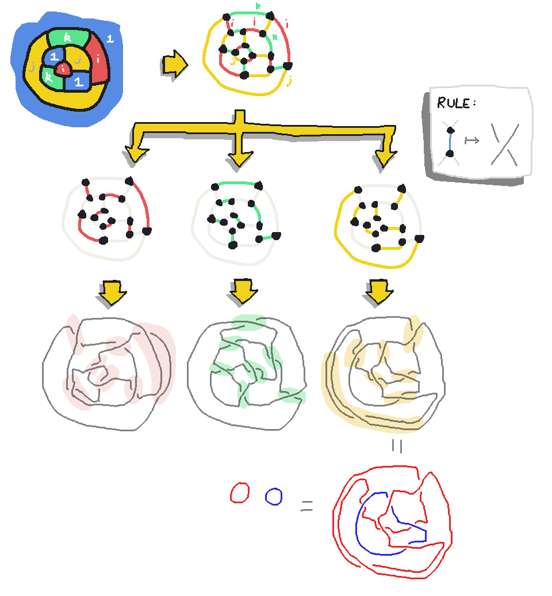

Maps and Knots
I had the following thought the other day. suppose you have a
trivalent planar map, i.e. every vertex has three edges. Suppose also
that it comes with a chosen chosen face 4-coloring. There's a standard
thing where you can turn a face 4-coloring into an edge 3-coloring, by
calling the 4 colors $\{1, i, j, k\}$ as if they're quaternions, and
letting each edge's color be the quotient of the colors of the faces
it adjoins, ignoring the resulting sign.
This gives you edge colors in the set $\{i,j,k\}$. You should never
get $1$, because the face 4-coloring should never have two adjacent
faces with the same color! Also, around every vertex, you should get
three different edge colors. For if you didn't, it would imply
an equation of the form $i \cdot i = j$ or $k \cdot k = k$, which are
both impossible.
Now with an edge 3-coloring in hand, we can notice that focusing on any one of those
colors gives us a bunch of edges, each one of which can be thought of as
- a little gadget
- with four wires dangling out of it,
- which is symmetric under $180\degree$ rotation
and which collectively account for the whole graph. You know what else is
a little gadget with four wires dangling out of it which is symmetric
under $180\degree$ rotation? A crossing in a knot diagram!
So my thought is this: what happens if we replace all the edges
of a particular color in an edge 3-coloring of a trivalent planar graph
with knot crossings?

Answer: well, we get some tangle (maybe multi-stranded). But,
unfortunately, I can't seem to find anything interesting beyond that!
The translation doesn't seem to respect Reidemeister moves or
colorability in any interesting way. Still, this smells like the shape
of something that ought to have some interesting consequences. Maybe
it's a nearby idea?